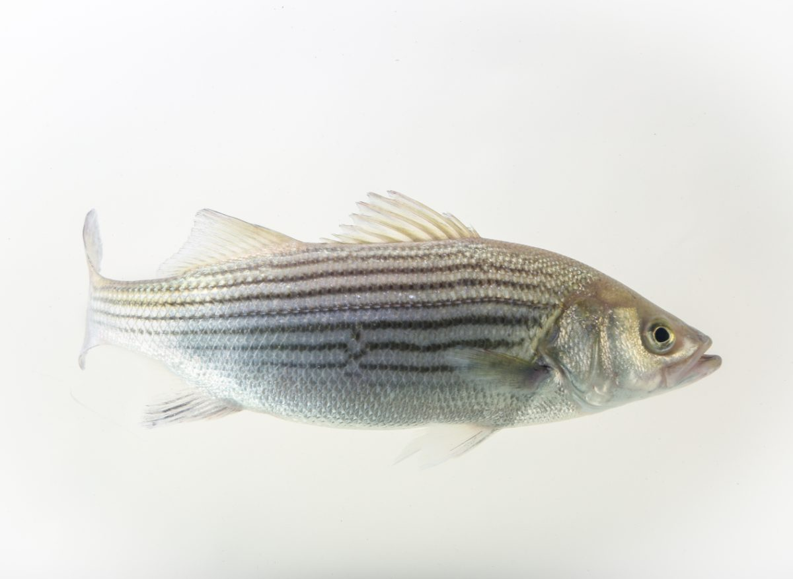
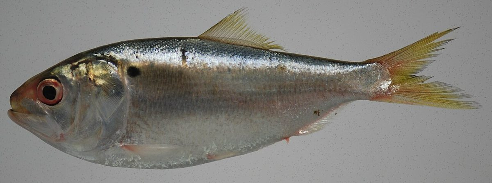
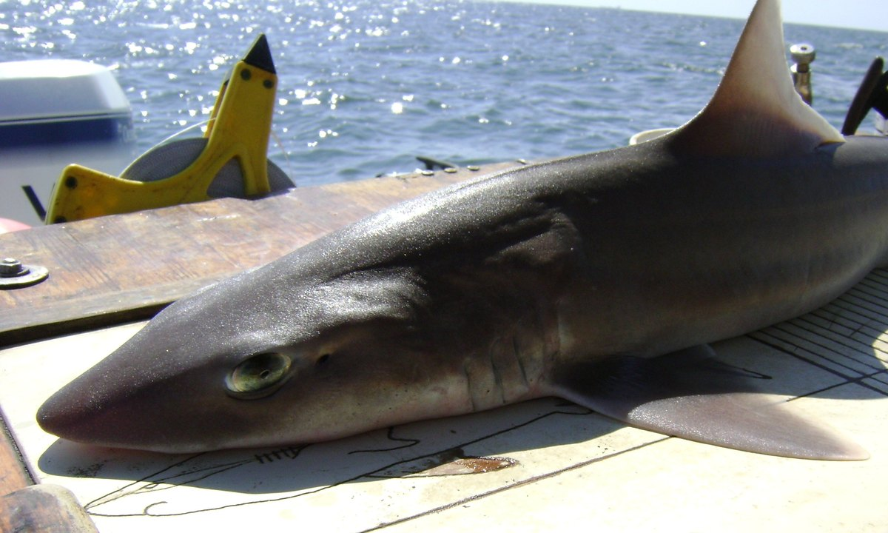
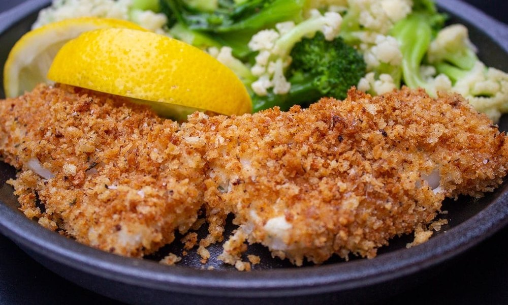
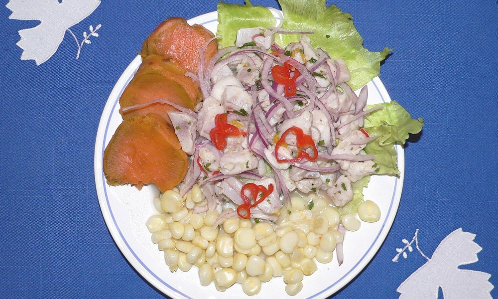
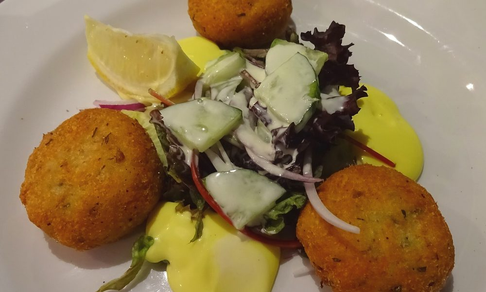
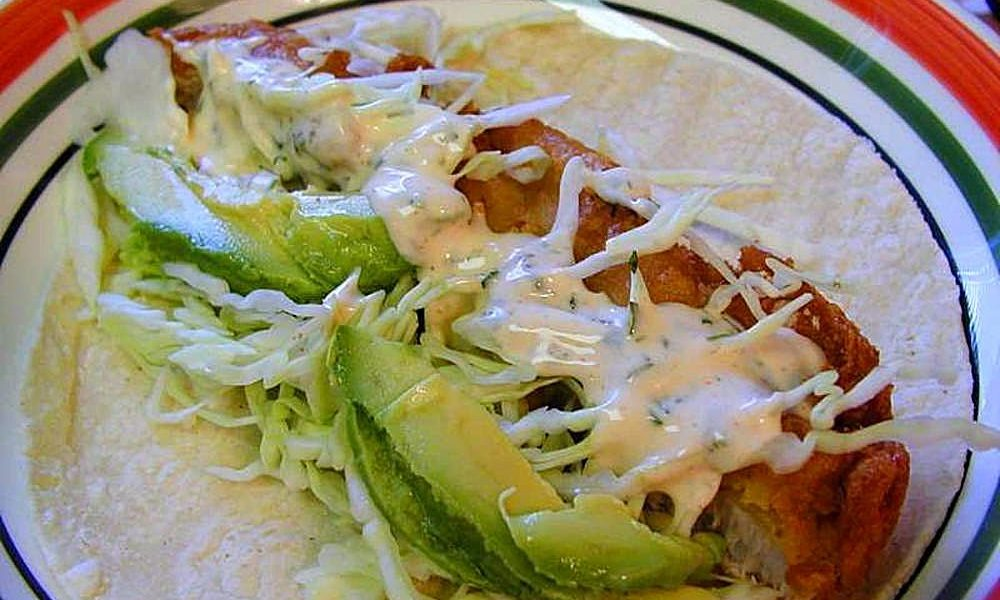

Greg
Capt. Greg Gargiulo runs the Patty Ann out of Captree. His call is the only call that matters.
Captree, 6:00 AM to 12:30 PM | Saturday, Nov 7, 2026
Bruce, Will, Tom, Dennis, Jon, and Don ran the Patty Ann out of Captree, out Fire Island Inlet, and west down the beachfront to Long Beach for the fall striped bass run. Capt. Greg had the wheel, AJ had the deck. Five hours of nothing, one phone call, and then every fish of the day in forty-five minutes.
The day as it happened, closed out at the dock. Capt. Greg's count is the official one.
Capt. Greg Gargiulo runs the Patty Ann out of Captree. His call is the only call that matters.
Rigging, gaffing, netting, and keeping six guys untangled. Tip the mate.
Will's dad. Put the whole thing together, booked the boat, and wrote the briefing. Chief morale officer.
Played lacrosse with Bruce back in the day. Has his own boat, so he knows exactly where the fish aren't. Slept through this entire trip and still caught the biggest fish on it.
Lifelong fisherman, now a Hobie fishing kayak guy. Also tutored Will for the SATs, so he has already made him suffer once.
Another one from the old lacrosse crew. Made the trip down from the North Shore.
Long Island Vice. Grew up a few houses from Bruce and has been his friend ever since. Fisherman and pickleball menace.
Bruce's son and the tech guy of the outfit. Helped his dad organize the trip, shot the photos, and built this page.
November out of Fire Island Inlet is fall-run fishing. Bass stage in the inlet rips and along the ocean beachfront chasing bait moving west and south. Public references are on the chart; the Patty Ann's electronics and Capt. Greg's judgment are the source of truth.
Patty Ann Charters DEC artificial reef locations DEC saltwater regulations NDBC buoy 44025Fall stripers are migrating. They are wherever the peanut bunker, sand eels, and mullet are, which changes day to day and sometimes hour to hour. Structure and current concentrate the bait; the bait concentrates the bass.
Public references: Fire Island Inlet 40°37.8′ N / 73°16.4′ W, Democrat Point 40°38.0′ N / 73°17.6′ W, Fire Island Reef corners 40°35.600′ to 40°36.100′ N / 73°11.500′ to 73°13.500′ W (DEC). Confirm every number on the boat's chartplotter. This board is not a navigation chart.
Both cards are still live. Overcast and flat at the dock at 5:30, sun out by the time the fish showed. The tide table below is the one the inlet ran on that day.
Observed at NDBC 44025, 30 nm south of Islip. Water temperature and bait decide more than the model does.

Striped bass, Morone saxatilisSeven to eight black stripes running the length of a silver, brass-tinted side. Blunt head, deep shoulders, two separate dorsal fins. East Coast anglers call them stripers, rockfish, or linesiders, and the big ones get called cows.
They are anadromous: born in rivers like the Hudson and the Chesapeake, grown in the ocean, and back to fresh water to spawn. That migration is the whole reason today matters. Every November they pour out of Long Island Sound and down the south shore heading for wintering grounds off Virginia and the Carolinas, and they feed hard the entire way. A fish that ignored you in August will eat anything in front of it in November.
They are ambush predators that use current as a tool. They sit behind a bar, a rip, or a reef edge and let the tide deliver sand eels, peanut bunker, mullet, herring, crabs, and lobsters to them. That is why the inlet rips at Democrat Point and the bars along the Lighthouse beachfront fish so well on a moving tide, and why slack water is usually a coffee break.
A 28 to 31 inch keeper is roughly 8 to 12 pounds and 6 to 9 years old. A 40 inch fish is usually over 20 years old and almost always a female. They can live past 30 years and over 70 pounds. That age curve is exactly why the slot limit exists: the big breeders go back in the water.
Photo: Steven G. Johnson, CC BY-SA 3.0
Bunker (Atlantic menhaden)
Spiny dogfishThe whole day in order: dark dock, grey run out, the forty-five minutes when it all happened, cigars, and AJ cleaning them on the way in. Uploads are open, so anyone with the link can add theirs.
Everybody drove home with fish, thanks to a captain who stayed out an hour and a half past the booked return. AJ filleted and bagged all three on the ride in, so the work was done before the boat touched the dock. Three keepers split six ways, so plan on a couple of good fillets each. Cook it in the next two days or freeze it, and keep it cold the whole way home.
Quantities below are built on 1 1/2 pounds of skinless striper fillet, which is about what one keeper yields and feeds four. The dish photos are reference shots, not our fish. Every photograph of the actual trip is up in the gallery.

Bruce's pick, and the house favoriteThe one that gets made every time. Salt the fish, dip in the egg, then press into the breadcrumbs mixed with the Parmesan. Fry in olive oil over medium-high until golden on both sides, two to three minutes a side depending on thickness. Drain on a rack, not paper.

For the freshest fillet in the bagCover the fish completely with the lime juice and let it sit cold for 20 to 30 minutes, until the outside turns opaque and the center is just barely translucent. Drain off most of the juice, then fold in everything else.

Bruce's other one: skip the crab, use the bassEverything a crab cake does, striper does cheaper and with fish you caught. Cook the fillet until it just flakes, cool it, and flake it into big pieces. Fold in everything else, form eight cakes, chill them at least 30 minutes, then fry in the butter and oil two to three minutes a side until deep golden. Makes about 8 cakes.

One more, if you want to get creativeStriper is firm enough to take real heat, which most fish are not. Pat the fillets dry and coat them heavily in the spice. Get a cast iron pan ripping hot, add a thin film of oil, and lay the fish down. Two to three minutes a side until the crust is dark and the fish flakes. Break it into chunks.